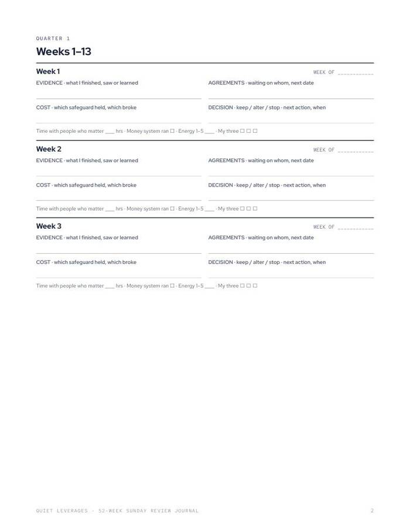
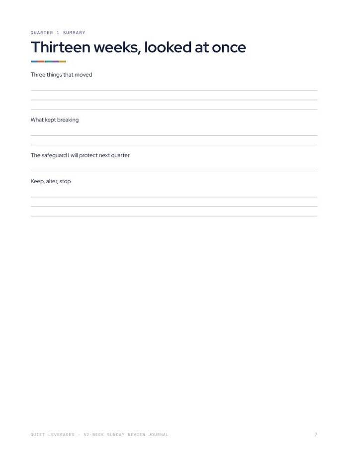
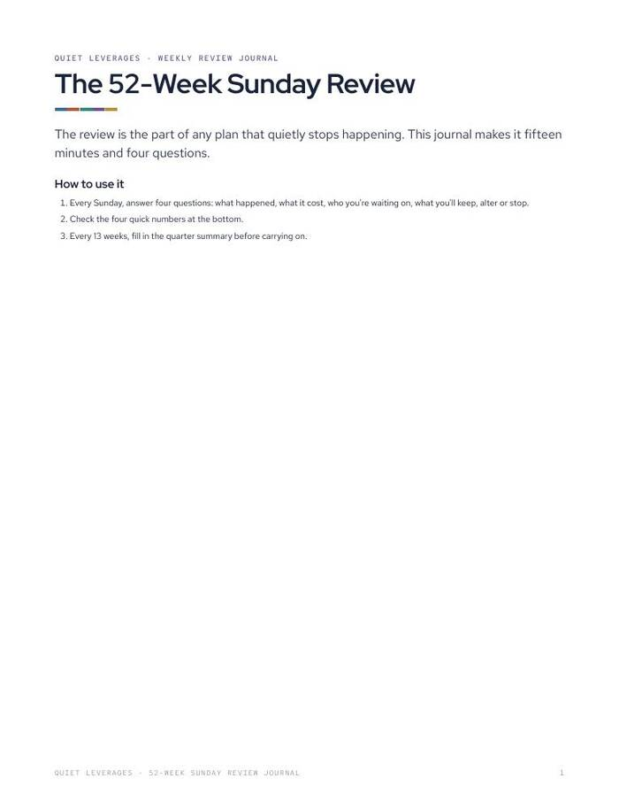

Fifteen minutes every Sunday, for a whole year.
Fifty-two weekly review blocks, three to a page, with four quick numbers each week: people, money, energy and your three.
Printable PDF. US Letter, prints fine on A4 at 'fit to page'.

Three blocks a page
Short reviews you can finish in fifteen minutes.
Four quarter summaries
Look back across thirteen weeks at once.
Four numbers each week
People, money, energy and your three.
weekly review blocks
quarter summaries
per Sunday
What you leave with
A habit with a place to live
A weekly slot with a page already waiting.
A record of the year
Fifty-two weeks of what happened, so memory does not have to do the work.
Quarter checkpoints
A summary page after each thirteen weeks to see what moved.
Room to grow
The Quiet Reset 2027 adds the planning around the weekly review.
What's in the download
Fifteen minutes every Sunday.
- 52 weekly review blocks. Three per page.
- Four quarter summaries.
- Four quick numbers each week. People, money, energy, your three.
- Undated. Start any week.


Fifteen minutes, then close it
Pick your Sunday slot
Same time each week.
Fill the block
Record the week and the four numbers.
Summarise each quarter
Look across thirteen weeks at once.
Is this the right size?
Use this if
- You want a weekly review that stays small.
- You like writing on paper.
- You want a year of records in one place.
Skip it if
- You want a planner with goals and cycles. See The Quiet Reset 2027.
- You want daily pages. This is weekly.
The numbers behind it
of US adults began 2026 feeling financial stress.
NEFE, Jan 2026In-person time with friends fell from about 60 minutes a day in 2003 to about 20 in 2020.
American Time Use Survey dataWhat readers say about 52-Week Sunday Review Journal
Get 52-Week Sunday Review Journal
One small tool, one sitting.
- Printable PDF
- 52 weekly review blocks
- Four quarter summaries
Before you decide
What format is it?
A printable PDF. Print it or use it on a tablet with any PDF app.
How long does it take?
Fifteen minutes each Sunday.
Who is it for?
Anyone who wants a short, steady weekly review across a whole year.
Will it print on A4?
Yes. It is US Letter and prints fine on A4 at 'fit to page'.
Is it dated?
No. It is undated, so you can start any week.
Is this advice?
No. It is a planning worksheet and general education, not medical, psychological, legal, financial or employment advice.
The next step after this one

Fifteen minutes every Sunday, for a whole year.
Fifty-two weekly review blocks, three to a page, with four quick numbers each week: people, money, energy and your three.
Get it for $9Instant download on Gumroad. Print it or use it on a tablet.